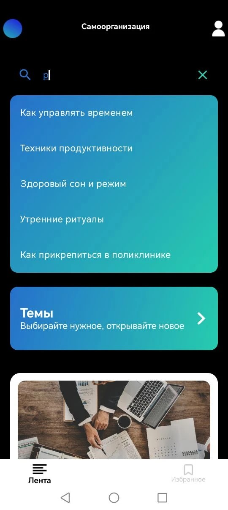
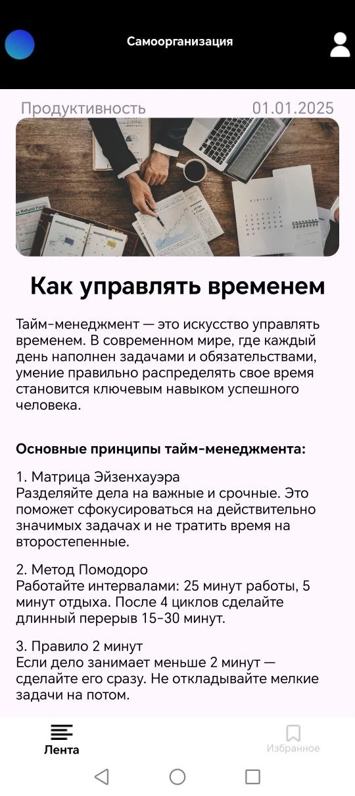
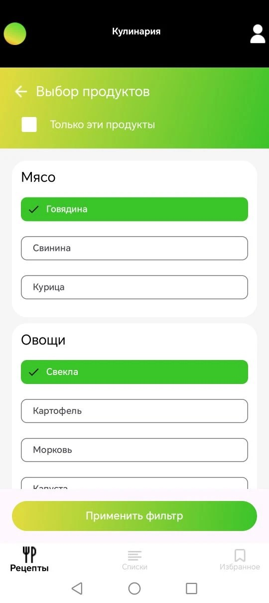
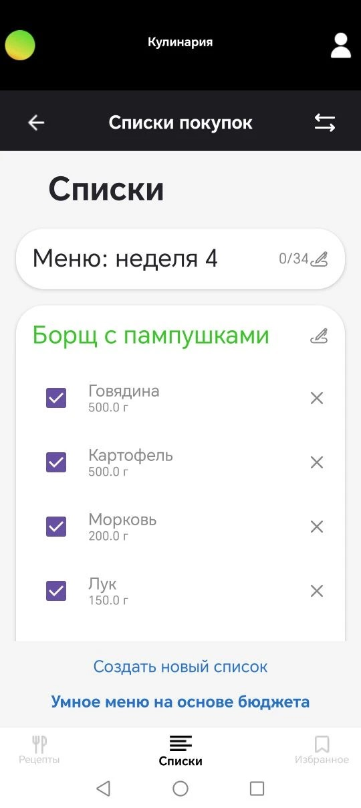
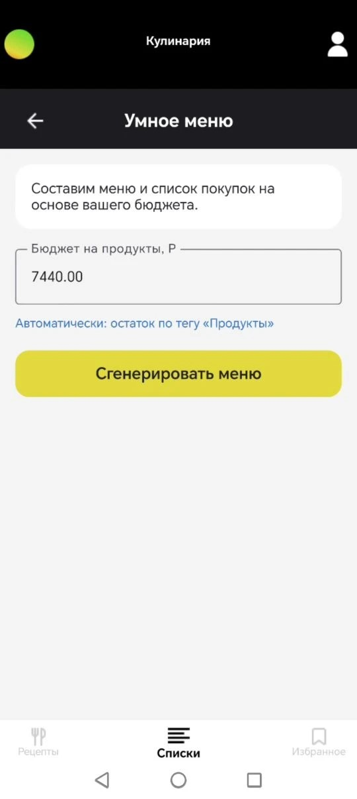
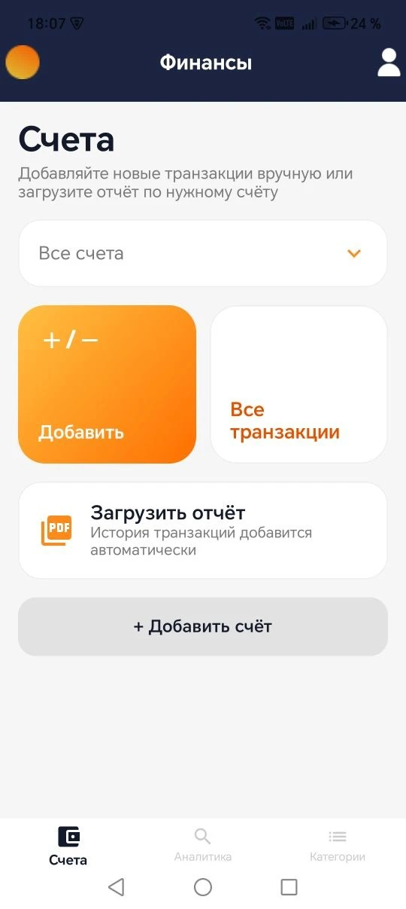
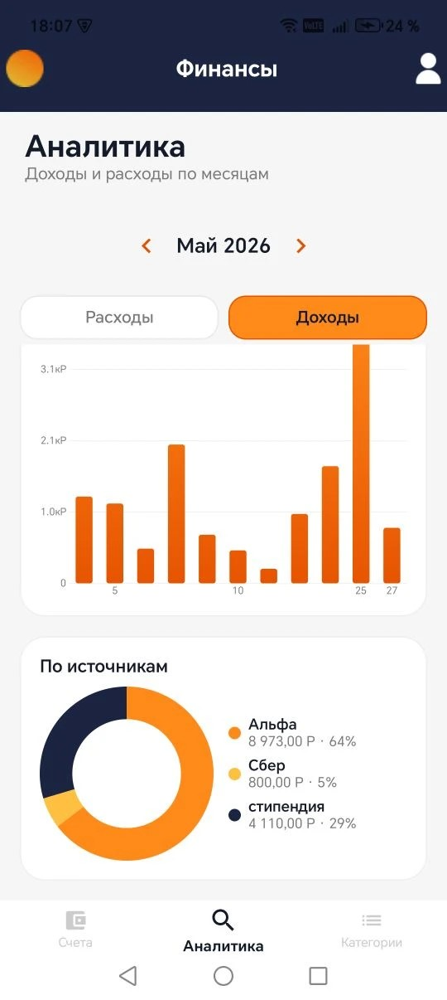
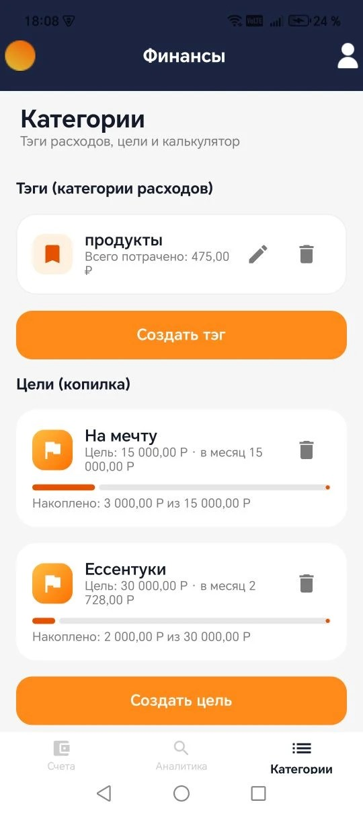
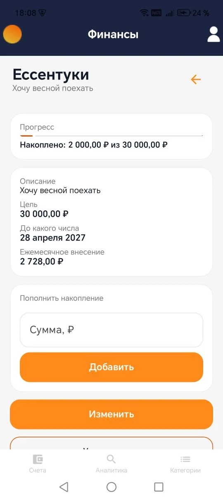

Всё для
самостоятельной
жизни
Sam помогает тем, кто только начал жить отдельно. В одном приложении собраны статьи о быте и самоорганизации, рецепты со списками покупок и учёт личных финансов, а ГигаЧат подбирает меню на неделю под твой бюджет.
Android 11 и новее · Без рекламы · Умное меню на базе ГигаЧат

Зачем нужен Sam
Переезд в другой город, первая стипендия или зарплата, своя кухня и свой бюджет. Для студентов и молодых специалистов это первый опыт жизни без поддержки родителей, и даётся он непросто. Деньги заканчиваются раньше, чем планировалось, ужин заменяют перекусы, а полезные советы приходится собирать по десяткам сайтов и приложений.
Sam придуман как одно приложение вместо пяти. Здесь можно вести учёт доходов и расходов, копить на цели, находить рецепты из тех продуктов, что уже лежат в холодильнике, собирать списки покупок и читать короткие понятные статьи о том, как наладить быт. Модули связаны между собой: остаток бюджета на продукты подсказывает умному меню, на какую сумму планировать неделю, а любой рецепт в одно нажатие превращается в список покупок.
Сейчас Sam развивается как студенческий стартап, а команда готовит его к публичному выпуску.
Проект реализован при поддержке Фонда содействия инновациям в рамках программы «Студенческий стартап» мероприятия «Платформа университетского технологического предпринимательства» федерального проекта «Технологии».
Всё нужное в одном приложении
Статьи, кулинария и финансы живут в одном месте и помогают друг другу. Переключаться между ними можно в любой момент через меню в левом верхнем углу экрана.
Статьи
Короткие материалы о том, с чем сталкиваешься, когда начинаешь жить сам. Как управлять временем, как наладить режим, как прикрепиться к поликлинике в новом городе.
- Лента статей с поиском по названию
- Подборки по темам
- Избранное и лайки
Кулинария
Рецепты без длинных предисловий, подбор блюд из того, что уже есть дома, списки покупок и меню на неделю от ГигаЧат.
- Поиск рецептов по продуктам и категориям
- Ингредиенты рецепта попадают в список покупок одним нажатием
- ГигаЧат составляет меню и список покупок под бюджет
- Свои списки покупок и избранные рецепты
Финансы
Простой учёт денег без перегруженных банковских графиков. Счета, доходы и расходы, загрузка выписки из банка, теги с лимитами, цели накопления и калькулятор вклада.
- Доходы и расходы по счетам и источникам
- Импорт операций из PDF-выписки банка
- Аналитика по месяцам, дням и источникам
- Теги расходов с лимитами
- Цели накопления и калькулятор вклада
Главные возможности
Поиск по продуктам
Отметь, что лежит в холодильнике, и Sam покажет рецепты, для которых не нужно идти в магазин. Есть режим «только эти продукты».
Список из рецепта
Понравился рецепт? Одно нажатие, и все ингредиенты с количествами уже в списке покупок. Купленное отмечаешь галочками прямо в магазине.
Умное меню
ГигаЧат смотрит, сколько денег осталось на продукты до конца месяца, и собирает меню на каждую неделю вместе со списком покупок. Список сразу сохраняется рядом с остальными.
Ручные списки
Нужен обычный список для похода в магазин? Создай свой с нуля, назови как удобно и дополняй в любой момент.
Транзакции
Записывай доходы и расходы вручную или загрузи PDF-выписку из банка. Операции разберутся автоматически, повторы не задвоятся, а сам файл никуда не сохраняется.
Аналитика бюджета
Графики по дням и месяцам, диаграмма по источникам и сумма за месяц. Сразу видно, куда уходят деньги и откуда приходят.
Теги и лимиты
Заведи теги для расходов и поставь на них месячный лимит. Остаток по тегу «Продукты» потом подхватит умное меню.
Цели накопления
Поездка, новый ноутбук или подушка безопасности. Укажи сумму и срок, Sam посчитает ежемесячный взнос и покажет, сколько уже накоплено.
Калькулятор вклада
Введи сумму, ставку и срок в месяцах, и Sam покажет, сколько принесёт вклад. Удобно, когда выбираешь между предложениями банков.
Так выглядит Sam
Настоящие скриншоты с телефона, без ретуши.








Умное меню на базе ГигаЧат
В Sam встроен ГигаЧат, российская языковая модель от Сбера. Приложение само подставляет остаток бюджета по тегу «Продукты» до конца месяца, а если хочешь, сумму можно ввести руками. Дальше ГигаЧат расписывает завтраки, обеды, ужины и перекусы на каждую неделю и добавляет к ним список покупок.
Готовый список сохраняется рядом с остальными списками покупок, так что в магазин идёшь уже с планом на неделю.
Sam в работе
Короткий обзор приложения в записи. Смотри, что умеет приложение, прямо здесь.
Видеообзор скоро появится